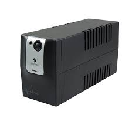

Jual Genteng Metal di Pematangsiantar ☎ ??? (www.dis.or.id)
Salah satu komponen terpenting dari sebuah bangunan baik itu kecil, sedang, besar maupun megah sekalipun pasti memerlukan atap. Dikarenakan banyak keunggulan yang mengalahkan kayu sebagai rangka konvensional. Keberadannya pun sudah menggeser kayu dan bahkan sewaktu-waktu dapat menggantinya. Atap seperti halnya namanya membutuhkan rangka dan atap utama sebagai bahan penutup sebuah bangunan. Keberadaannya tidak kalah penting, dikarenakan fungsinya adalah menyangga. Ada pula atap galvalum dengan bentuk unik seperti atap lengkung, gelombang dan lain sebagainya.
Distributor & Supplier Genteng Metal

Kami adalah distributor genteng metal Pematangsiantar, tersedia berbagai ukuran dan varian genteng metal Pematangsiantar. Kami memiliki stock genteng multiroof, rainbow dan sakura roof terlengkap. Kami siap melayani pembelian dalam jumlah kecil ataupaun partai besar untuk tiap tiap brand tersebut. Keberadaan genteng metal Pematangsiantar sudah menggantikan genteng konvensional yang terbuat dari tanah liat. Apakah mitos itu benar? Faktanya beberapa jenis genteng metal Pematangsiantar memang menyebabkan rumah terasa lebih panas dan berisik ketika hujan, namun kabar baiknya bila anda memilih menggunakan genteng metal Pematangsiantar pasir terbaik anda dipastikan akan terhindar dari dua hal tersebut.
Bila belum percaya, maka anda dapat mengujungi situs official kami di dis.or.id untuk mendapatkan info yang lebih lanjut dan dapatkan penawaran terbaik dari kami khusus untuk anda.
Info Pemesanan Selengkapnya
Google Maps: https://www.google.com/maps/d/u/0/viewer?mid=18K_Vf8GKnjN9AtE2jUMATDSYvScojDst&ll=-7.269373870070218%2C112.655575&z=16
Note: https://www.facebook.com/notes/distributor-of-industrial-supply/pabrik-supplier-genteng-metal/1783191985314014/
Event: https://www.facebook.com/events/1480458558737554/
Portfolio Produk: https://www.facebook.com/pg/DistributorOfIndustrialSupplyDIS/photos/?tab=album&album_id=1683750531924827
Distributor & Supplier Besi Beton

Besi beton adalah besi yang digunakan untuk penulangan konstruksi beton atau biasa dikenal sebagai fungsi badan bertulang. Apa Cepetan merupakan besi yang dapat diaplikasikan pada suatu gedung karena bahan ini lebih mudah didapat dan juga harganya pun lebih ekonomis dibandingkan dengan penggunaan material lainnya. Berikut fungsi dan kelebihan dari besi beton yaitu memiliki tekanan yang kuat dan lebih tinggi dibandingkan dengan bahan lainnya, tahan terhadap api dan air dan juga memiliki struktur terbaik pada bangunan jika banyak bersentuhan dengan air, memiliki struktur yang cukup kokoh, tidak memerlukan biaya pemeliharaan yang cukup tinggi, dapat dirakit dalam bentuk yang sangat beragam dan masih banyak lagi kelebihan yang bisa anda dapatkan dengan menggunakan Besi beton.
Besi beton terkenal sebagai bentuk besi yang memiliki kekuatan besar dan tahan terhadap berbagai guncangan dan tekanan.
Segera kunjungi dis.or.id untuk mendapatkan besi beton yang anda inginkan. Anda bisa langsung mengunjungi dis.or.id. Karena, disan anda bisa mendapatkan besi beton yang anda inginkan yang pastinya sesuai dengan yang anda ekpetasikan.
Distributor & Supplier Steel Grating

Plat Grating merupakan suatu jenis plat besi yang terbuat dari rangkaian semisal sekrup besi dan plat jalur. Karena harga murah tidak menjamin adanya kualitas yang terbaik. Dengan mencaro steel grating kualitas terbaik, pastinya kualitas bangunan yang anda bangun akan lebih kokoh dan tahan terhadap berbagai cuaca.
Kini anda bisa mendapatkan steel dengan mengunjungi dis.or.id. Disana anda bisa mendapatkan steel grating dengan berbagai ukuran tertentu dengan harga yang sangat terjangkau namun berkualitas dan bermutu tinggi.
Distributor & Supplier Pipa (Hitam/Gas, Galvanis)

Manfaat dari pipa hitam galvanis memang banyak sekali untuk kebutuhan konstruksi bangunan. Pipa hitam banyak sekali diaplikasikan pada area pertambangan minyak gas karena ia memiliki struktur yang 3 kali lebih kuat dari jenis pipa biasa. Sifatnya yang tahan karat menjadikan pipa ini dapat diaplikasikan disegala perubahan cuaca Indonesia. Pipa hitam gas terjual dengan berbagai ukuran, ukuran paling kecil yang tersedia adalah ½ inc dan paling besar 40 inc.
Distributor & Supplier Kawat Bronjong/Gabion

Kawat bronjong bisa bertahan sangat lama karena kawat ini tidak mudah berkarat. Kawat ini juga ada yang berbahan galvanis. Inilah mengapa kawat ini tidak akan berkarat meskipun terkena air hujan. Pasalnya, jika kawat berkarat, maka kawat mudah putus dan rusak. Namun, banyak yang tidak tahu jika ternyata kawat bronjong ini juga digunakan sebagai pelabis tiang penyangga jembatan. Selain itu, kawat ini juga digunakan sebagai pemecah gelombang ringan.
Sehhingga, anda bisa leluasa memilih kawat bronjong mana yang susuai dengan yang anda butuhkan.
Distributor & Supplier WF H-beam

Jenis profil baja struktural yang saat ini tengah populer di tengah masyarakat adalah besi WF. jenis besi WF banyak dimanfaatkan sebagai konstruksi baja. Di samping itu, kepadatan yang tinggi juga dimiliki oleh besi jenis ini sehingga kualitasnya memang benar-benar terjamin. Besi WF memiliki daya tahan terhadap suatu bangunan.
Kini anda bisa mendapatkan besi WF dengan berbagai ukuran tentunya dengan harga yang sangat terjangkau. Terdapat berbagai ukuran dari besi WF yang bisa anda jadikan pilihan sesuai dengan kebutuhan anda. Pastinya dengan harga yang sangat terjangkau.
Distributor & Supplier Expanded Metal

Expanded metal atau yang biasa dikenal dengan sebutan X.P.M. ini merupakan salah satu produk hasil dari kemajuan teknologi saat ini. Expanded Metal memiliki corak yang sangat unik dengan berbagai bentuk berbeda. Sedangkan untuk keunggulannya sendiri adalah memiliki bentuk yang indah dan juga homogen, lebih vareatif dalam hal pengaplikasiannya, relatif lebih ringan, dan lebih mudah dipasang. Selain itu, Expended Metal juga dikenal mampu menahan beban berat, memiliki permukaan yang anti slip/tidak licin, dan juga dikenal tahan karat untuk material yang dari alumunium.
Expanded Metal ada yang berbentuk diamond dengan model yang lebih menarik, kuat, ekonomis, serta tahan lama. Disana anda bisa menemukan dan memesan langsung expanded metal yang anda butuhkan.
Distributor & Supplier Plat (Hitam, Kapal, Bordes, Strip)

Berbicara tentang plat besi memang beragam, hal ini di tentukan dari seberapa besar dan tebal plat yang di inginkan. Pada umumnya disebut plate kapal dikarenakan biasa digunakan untuk bahan pembuatan badan kapal dan mempunyai standart spesifikasi material yang beragam untuk spesifikasi. Harga plat besi bordes, strip dan plat besi lainnya sangat terjangkau per meter persegi.
Oleh Karena itu dis.or.id dapat menjual plat besi yang murah dengan kualitas yang bagus. Segera hubungi nomor dis.or.id dan segera order karena dis.or.id adalah agen resmi yang langsung mengambil plat hitam ini dari pabriknya. Tak perlu khawatir harga, karena harga yang di patok pastinya sangat murah dan terjangkau.
Distributor & Supplier Floor Deck (Bondex)

Floor deck ini adalah material yang bisa difungsikan sebagai media pengganti dari material konvensional yang umumnya berbentuk papan lebar, misalnya saja seperti triplek. Memasang Floordeck berarti memasang bekesting tetap pada areal yang luas dalam waktu singkat dan menghemat pemakaian perancah tiang penyangga. Panel Floordeck akan membentuk lantai kerja yang aman yang berfungsi untuk pelindung cuaca lantai bawahnya. Floordeck atau bondek ini adalah material bangunan yang terbuat dari bahan baja galvanis dengan kekuatan tinggi yang mampu menahan beban struktur pelat yang ada pada lantai. Pasak Floordeck yang berupa rusuk-rusuk panel tertanam dengan kuat didalam beton yang membuat seluruh panel menjadi tulangan positif searah yang sangat kuat.
Kini anda bisa mendapatkan floor deck berkualitas dan bermutu tinggi dengan hanya mengunjungi situs dis.or.id. Disana tersedia berbagai macam ukuran dari floor deck yang bisa anda beli sesuai dengan kebutuhan anda.
Distributor & Supplier Atap Galvalum

Dengan semakin panasnya bumi, maka di ruangan pun masih terasa suhu panas. Atap galvalum mempunyai komposisi tertentu sehingga menyebabkan atap galvalum tersebut lebih kuat dan awet jika dibandingkan dengan bahan baja ringan lainnya.
Banyak sekali kelebihan yang dimiliki oleh atap galvalum ini. Saat proses pemasangan rangka pada bagian atap.
Galvalum diklaim mempunyai daya tahan karat 4x lebih kuat dari galvanis. Ini adalah kekeliruan besar, atap galvalum berbeda dengan atap seng. Bila bebannya berat maka anda harus memakai galvalum dengan ukuran yang lebih besar. Jika dalam segi harga, kayu memang lebih murah. Tentunya ada sudah mengetahui bahwa galvalum tidak bisa dimakan rayap bukan? Oleh karena itulah bila dibandingkan dengan kayu, maka saya rekomendasikan atap galvalum kepada anda.
Distributor & Supplier Atap Lengkung

Bagian yang berfungsi sebagai pelindung bagi pengguna dan isi bangunan dari panas, hujan dan berbagai macam cuaca adalah atap. Ya, atap sangatlah dibutuhkan untuk setiap bangunan yang dibangun oleh manusia. Atap dapat mempercantik bagian atas dari bangunan anda.
Saat ini banyak sekali jenis atap dengan berbagai bahan dasar pembuatnya. Salah satu jenis atap galvalum yang sekarang sedang populer adalah atap lengkung. Seperti namanya, atap lengkung adalah atap yang bentuknya melengkung sehingga membuat bangunan yang dinaunginya terlihat megah.
Penggunaan atap lengkung contohnya adalah pada pembuatan atap stadion. Nah, atap lengkung inilah yang berjasa membuat stadion tersebut terlihat megah. Yaitu, lengkungannya yang sangat tidak biasa jika dibandingkan dengan atap galvalum yang lain. dis.or.id adalah distributor terpercaya untuk anda. Karena kami adalah tangan pertama yang bertindak sebagai supplier, toko sekaligus distributor.
Distributor & Supplier Truss Canal C
Besi kanal C dapat kita temukan hampir dimana saja. Jadi, galvalum adalah salah satu jenis baja terbaik dimana memiliki cirikas ringan dan tipis namun memiliki daya tahan, dan kekuatan yang sangat baik bahkan di klaim lebih baik bila kita bandingkan dengan baja konvesional. Dengan penggabungan galvalum dengan besi kanal c maka sebuah bangunan bisa menjadi lebih kuat dan berkualitas. Tidak heran bila saat ini besi ini lebih banyak diminati, selain karena mudah didapatkan, memiliki kekuatan yang sama, tahan lama juga karena harga yang dinilai lebih ekonomis. Satu untuk rangka dan satunya lagi adalah untuk atap. Mencari kanal c galvalum berkualitas dengan harga murah? Maka dis.or.id adalah jawaban tepat untuk anda. Silakan kunjungi web dis.or.id untuk info lebih lanjut mengenai kebutuhan anda.
Distributor & Supplier Hollow Galvalum

Hollow galvalum adalah galvalum yang berfungsi sebagai rangka atap sebuah bangunan. Sebenarnya ada banyak unsur yang dilibatkan dalam pembuatan hollow galvalum ini, yaitu alumunium, baja, beserta zinc. Namun, untuk mendapatkan hollow galvalum ini anda tidak perlu repot untuk mencarinya.
Karena hollow galvalum ini dapat ditemukan di toko bangunan khusus yang keberadaannya juga sudah menjamur. Kami akan mengirim barang pesanan anada sampai pada tujuan dengan aman, cepat dan tepat tujuan. Sehingga tidak heran bila hollow galvalum menjadi produk paling dicari oleh masyarakat dalam industri pembangunan. Apakah anda sedang mencari hollow galvalum dengan segala kelebihannya? Bila iya, maka anda cukup mengunjungi situs dis.or.id.
Distributor & Supplier Seng Gelombang

Apakah anda hendak mendirikan bangunan baru? Sebuah bangunan dapat berdiri tegak kokoh dan bernilai bukan cuman karena dinding dan permukaan lantainya saja. Ia lebih mudah di pasang dan harga jual yang ekonomis dipasaran membuat seng gelombang memiliki banyak peminat. Meskipun begitu, nyatanya seng gelombang memiliki kekurangan yakni ia lebih cepat menyerap panas. Ia lebih mudah di pasang dan harga jual yang ekonomis dipasaran membuat seng gelombang memiliki banyak peminat. Ia lebih mudah di pasang dan harga jual yang ekonomis dipasaran membuat seng gelombang memiliki banyak peminat. Sedangkan sekarang ini telah tersedia berbagai macam atap bangunan berbentuk seng gelombang yang memiliki banyak keunggulan, baik dilihat dari fungsi maupun harga jual pasarnya.
Dengan seng gelombang kecil, anda tak perlu lagi repot memotong ukuran asli seng gelombang dan menata seng gelombang dengan ukuran yang pas pada atap bangunan. Distributor penjual seng gelombang sekarang ini sudah menyebar ke seluruh Indonesia, baik di kota-kota besar maupun kecil. Salah satu distributor yang terkenal akan kualitas dan jaminannya adalah dis.or.id anda dapat mengunjungi situs tersebut dan menjelajahinya.
Distributor & Supplier Plat Seng

Membeli plat galvanis memang bisa dilakukan dengan cara lembaran atau per meter. Selain itu manfaat dan kelebihan yang dimiliki jauh lebih banyak dari seng biasa.
Plat galvanis ukuran 3mm memang dikategorikan ke ukuran paling tebal, sedangkan 1mm dapat dikatakan adalah titik tengah dari ketebalan plat. Namun apabila anda membutuhkan nya hanya sedikit, misal untuk penyambungan, atau ingin mengganti beberapa bagian talang rumah anda, anda dapat membeli yang per meter saja. Hal hal tersebut memang menjadi ciri khas dari seng biasa pada umumnya. Plat gavalum sendiri sering dinilai sebagai pengganti seng biasa terbaik, plat jenis ini sudah banyak digunakan untuk talang, pabrik, rumah, ataupun kebutuhan outdoor lainnnya.
Apakah anda sedang mencari plat seng & plat galvalum? Anda berada di tempat yang tepat, silakan kunjungi situs dis.or.id untuk info lebih lanjut.
Distributor & Supplier Besi Wiremesh

Wiremesh merupakan besi yang diproduksi dengan bantuan mesin las otomatis dimana ia menggabungkan besi lonjor hingga membentuk anyaman. Besi wiremesh sering di anggap banyak orang adalah besi anyam karena strukturnya yang mirip dengan anyaman. Bentuk anyam dari besi wiremesh tersedia bermacam-macam, ada yang berbentuk kotak ada juga yang berbentuk jajar genjang, setiap jenis besi wiremesh dapat anda pilih sesuai kebutuhan. Besi wiremesh bisa anda manfaatkan untuk berbagai kebutuhan, misalnya saja untuk kebutuhan konstruksi penguat dak beton, plat lantai, dan juga anak tangga. Jika anda hendak mengaplikasikan besi wiremesh, maka tentukan dulu kebutuhannya sehingga bisa menentukan jenis wiremesh mana yang cocok untuk diaplikasikan. Sedangkan untuk kebutuhan bangunan biasa, besi wiremesh yang digunakan adalah yang berketebalan 4 – 6. Besi wiremesh dengan kualitas bagus biasanya akan diproses dengan sistem las otomatis, sehingga susunan kawatnya rapi dan jaraknya teratur. Untuk informasi lebih detail, anda dapat menghubungi kontak yang telah tersedia.
Distributor & Supplier Pagar BRC

Pagar BRC dibuat dari besi beton berukuran diameter 5 mm – 8 mm sehingga tergolong kuat sebagai pagar pengaman. Setiap potongan besi tersebut kemudian digabungkan dengan bantuan mesin las wiremesh. Pagar BRC termasuk dalam kategori pagar yang siap pasang untuk melindungi berbagai bentuk bangunan anda. Kekuatan pagar BRC sebagai pagar pelindung sangat bisa diandalkan, karena ia diproduksi dengan tegangan ijin 2900 kg/cm2 sehingga kekuatannya mencapai 2,5 kali lipat dari jenis biasa. Pagar BRC juga tahan karat karena lapisan besi telah terlindungi dengan galvanis. Bagi anda yang membutuhkan pagar BRC anda dapat menghubungi kami untuk informasi pemesanan.
Distributor & Supplier Kawat Loket, Kawat Harmonika

Kawat loket harmonika sering sekali diaplikasikan pada kebutuhan kawat pagar dan penutup jendela, hal ini tentu tidak tidak lain karena struktur bentuk dari kawat loket harmonika sendiri mirip seperti anyaman yang kuat. Dengan bentuknya seperti anyaman yang kokoh, anda dapat memanfaatkan kawat loket harmonika untuk berbagai keperluan. Apalagi jenis kawat galvanis yang digunakan tahan karat dan korosi, sangat awet bila anda bandingkan dengan jenis kawat biasa. Anda dapat memesan kawat loket harmonika yang terlapis dengan galvanis untuk kualitas terbaik yang tahan korosi. Untuk informasi lebih lanjut, anda dapat menghubungi kami! Ukuran lebar maksimal yang kami terima adalah 3 meter.
Distributor & Supplier CNP & UNP

Besi UNP atau yang biasa disebut dengan besi kanal merupakan besi yang memiliki bentuk lengkung seperti huruf U dan biasanya diaplikasikan sebagai sambungan atau dudukan atap. Selain itu, besi ini banyak dimanfaatkan untuk keperluan girts atau penutup dinding. Dilihat secara sekilas, spesifikasi dari besi UNP hampir mirip dengan besi WF. Membahas mengenai besi UNP pasti terasa kurang jika tidak membahas kembarannya pula, besi CNP. Banyak orang yang menyebut besi CNP ini sebagai profil C karena bentuknya melengkung seperti huruf C, meskipun begitu besi UNP dan CNP adalah material konstruksi yang berbeda. Besi CNP dan UNP ini sangat fleksibel, ia bahkan dapat dimodifikasi dengan plat koil yang menggunakan sistem cutting, sehingga tak heran bila banyak orang memesan jenis besi ini. Selain untuk material konstruksi bangunan, besi CNP juga bermanfaat untuk industri otomotif.
Distributor & Supplier Besi Siku

Dalam dunia konstruksi, salah satu material yang cukup penting dan tidak boleh dilupakan adalah besi siku. Besi siku dibuat dengan bentuk standar yang telah disesuaikan berdasarkan kebutuhan penggunanya, tak heran bila ia masuk kategori besi penyangga yang dapat diandalkan. Dengan bentuk kedua sisinya yang tegak lurus, anda bisa manfaatkan besi ini untuk keperluan rumah tangga ataupun furniture. Besi siku pada umumnya diproduksi dengan ukuran panjang 6 meter, sementara itu ukuran ketebalan dan lebarnya berbeda tergantung pada kebutuhan anda. Jika anda membutuhkan besi siku ini, segera hubungi kami! Kami menjual besi siku yang kokoh dan tahan lama. Produk besi siku yang kami tawarkan cocok untuk beragam keperluan, baik rumahan, konstruksi, industri dan sebagainya. Butuh informasi lebih lengkap lagi? Kunjungi saja situs resmi kami di www.dis.or.id
Distributor & Supplier Hollow (Hitam, Galvanil, Galvanis)

Jika saat ini anda membutuhkan besi hollow, anda dapat menghubungi kontak yang telah tersedia atau kunjungi saja website resmi kami di dis.or.id. Kami telah menyediakan besi hollow hitam galvanil galvanis yang bisa anda pesan langsung. Apabila anda membutuhkan material hollow hitam, kami dapat melayani kebutuhan anda tersebut dengan berbagai spesifikasi ukuran. Kami pun merupakan distributor relasi dari dis.or.id yang menawarkan produk hollow hitam galvanil galvanis dengan kualitas terbaik dan harga yang murah. Manfaat besi hollow dalam kehidupan ini banyak sekali, diantaranya untuk keperluan pagar, teralis, pintu besi, dan berbagai kebutuhan lain. Butuh info lebih lanjut? Anda dapat menghubungi kontak yang telah tersedia. Untuk informasi detail mengenai panjang dan harganya, segera hubungi kami. Anda bebas untuk menentukan ukuran pesanan besi hollow yang dibutuhkan pada kami. Jika anda tertarik memesan besi hollow ini maka tentukan dulu total kebutuhan anda, hubungi kami segera untuk info lebih lanjut!Selain sebagai pengganti material kayu, besi hollow yang kami jual dapat anda manfaatkan untuk kepentingan teralis, pintu besi, pagar, dan lain sebagainya.Bagi anda yang membutuhkan besi hollow, anda dapat menghubungi kami, besi hollow yang kami tawarkan cocok untuk kebutuhan pagar, pintu besi, teralis, dan lain sebagainya.Selain sebagai pengganti material kayu, besi hollow banyak dimanfaatkan untuk kebutuhan pintu besi dan teralis. Anda dapat menghubungi kontak kami untuk melakukan perhitungan kebutuhan hollow hitam tersebut. Hubungi kami untuk lakukan konsultasi kebutuhan besi hollow dan panjang yang dibutuhkan. Bagi anda yang membutuhkan besi ini, kami dapat membantu anda untuk menentukan ukuran besi yang diperlukan dengan menghubungi kontak kami!
Distributor & Supplier Pipa Pancang

Kalau membahas pipa pancang, tentu saja salah satu konstruksi penting dalam sebuah proyek ini sudah banyak di kenal. Sebagai sebuah konstruksi bangunan, tentu saja hal yang satu ini tidak asing lagi. Jika mengenal fungsinya yang memang sangat bermanfaat, apalagi bagi pembangunan di atas permukaan laut, pasti membuatnya lebih di kenal lagi. Nah, pipa ini sendiri memiliki berbagai ukuran maupun spesifikasi lainnya. Hal ini bertujuan untuk memudahkan penyesuaian. Nah, bagi Anda yang sedang membutuhkan pipa pancang, jangan khawatir karena Anda bisa mendapatkannya dengan mudah. sedangkan untuk kualitas yang Anda dapatkan, jangan khawatir karena bisa di jamin mutunya tinggi. Di sini Anda akan mendapatkan pipa pancang berkualitas yang siap di gunakan. Terlebih jika mengingat berbagai kelebihan dan fungsi nya yang bisa di terapkan di mana-mana.
Jasa Pondasi Bor (Strouss/Borepile)

Selanjutnya, dalam setiap pembangunan, pengeboran pondasi tentu saja adalah salah satu hal penting yang harus di perhatikan. Dalam hal ini, sekarang Anda tidak pelru khawatir karena ada banyak jasa yang melayani jasa pondasi bor. Bahkan di Indonesia ini pun juga telah tersebar di mana-mana. sedangkan masalaha kualitas tentu saja bisa di percaya dan sangat terjamin hasilnya. Hanya saja selama proses pengeboran akan muncul suara bising meskipun tidak di sertai getaran. Jika mengenal pengeboran lebih jauh, sebenarnya ada dua jenis yakni manual dan otomatis dengan penggunaan mesin. Dalam hal ini jika tidak ingin menggunakan jasa bor, Anda bisa membeli mesinnya. Untuk masalah kualitas hasilnya pun sama saja jadi tidak perlu khawatir. sedangkan jika di lihat dari segi kualitas, sebenarnya kedua jenis ini sama-sama bagus.
Distributor & Supplier Genset (New/Second)

Genset atau generator set yang menghasilkan tenaga listrik kini telah banyak di gunakan sebagai alternatif. Produk yang satu ini merupakan penghasil ternaga listrik yang dalam penggunaannya memanfaatkan bahan bakar berupa solar. Nah, untuk pembelian keduanya, bisa Anda dapatkan pula di DIS.
Hal ini pun menjadi sebab banyak yang lebih memilih pembelian genset yang bekas. genset sendiri tersedia dalam berbagai pilihan merk sesuai perusahaan yang mengeluarkan nya dan bisa Anda jadikan pilihan mana yang sekiranya paling sesuai.
Distributor & Supplier UPS

Untuk alat elektronik yang satu ini, biasanya memang belum cukup terkenal kecuali untuk dunia elektro. Sedangkan pengertian UPS sendiri merupakan salah satu dari sekian banyak alat elektronik yang mampu di jadikan sebagai sumber listrik sementara manakala sumber utamanya terputus. Dalam hal inI tentu saja akan sangat penting untuk memilikinya. Terutama bagi para pengguna komputer yang tergantung terhadap enegi listrik. Terutama bagi yang sering menggunakan komputer. UPS ini tersedia dalam varian yang berbeda. Karenanya, ketika Anda membeli UPS ini, sebaiknya memastikan terlebih dahulu seberapa besar kapasitas yang Anda butuhkan. Untuk tingkat ketahanan nya pun juga cukup tinggi sehingga bisa lebih menguntungkan.
Distributor & Supplier Forklift (Second)

Termasuk untuk forklif yang dalam kondisi bekas. Sedangkan dalam pembeliannya, bisa memilih baik yang baru ataupun yang bekas. Kalau untuk kualitasnya sendiri, meski bekas tetap saja terjamin. Jika sudah mengetahui kualitasnya yang terjamin tersebut, tentu saja segala aktifitas industri akan menjadi semakin mudah lagi. Sedangkan yang lebih menguntungkan lagi darinya adalah, ketika Anda sudah tidak memerlukannya, maka bisa di jal kembali pada distributor forklif.
Jasa Pembuatan Moulding Inject

Bagi Anda yang sedang bingung membuat moulding inject, jangan khawatir karena disini pun tersedia penawaran jasa untuk membuatnya. solusi tersebut adalah dengan memilih jasa pembuatan moulding inject seperti yang di tawarkan DIS. Sedangkan untuk masalah kuantitas jangan khawatir karena berapa pun kebutuhan Anda terhadap moulding inject, penawar jasa di sini selalu siap membantu. Selain itu dari segi kualitas pun juga merupakan moulding dengan kualitas yang tinggi. Setelah menyesuaikannya dengan benar, maka Anda akan mendapatkan moulding inject yang tepat sasaran sesuai dengan produk. Anda pun bisa memilih kira-kira ide seperti apa yang paling pas untuk produk Anda sehingga pembuatannya bisa tepat sasaran.
Jasa Pembuatan Sparepart Mesin Produksi / Alat Berat

Di dunia mesin, tentu saja mendengan kata sparepart atau alat berat sudah tidak asing lagi. Sedangkan mengingat fungsinya pun, sparepart ini cukup penting juga menjadi perhatian tersendiri. Oleh karena itu, silahkan menggunakan jasa terpercaya yang di sediakan di sini sehingga akan memiliki hasil yang terjamin. Apalagi mengingat dukungan tenaga profesional yang di sediakan sehingga sparepart Anda akan lebih aman. Perlu di ketahui pula bahwa dalam pembuatan ini memang tidak bisa sembarangan. Sedangkan harga penawaran, untuk setiap alat berat bisa berbeda tergantung jenis dan ukurannya. Nah, kalau di DIS, maka Anda pun akan mendapatkan alat berat yang berkualitas dan di jamin aman.
Jasa Service Elektronik (Kompor Gas, Dispenser, Mesin Cuci)

Jadi ketika terasa ada yang salah dengan barang-barang elektronik Anda, jangan khawatir karena di sini Anda bisa memperbaiki dan mendapatkan hasilnya seperti sedia kala. Untuk kualitas service yang di tawarkan, jangan khawatir karena kualitasnya sangatlah tinggi. Nah, kalau masalah servicenya sendiri sebenarnya Anda bisa juga melakukannya pada barang-barang yang harus di cek saja sekalipun tidak ada keluhan secara spesifik. Sedangkan untuk service ini sebenarnya tidak hanya untuk barang-barang bermasalah saja melainkan juga untuk pegecekan barang elektronik Anda sehingga akan tetap aman dan lancar di gunakan.
Sudahkah anda mengetahui arti penting dari sebuah komponen bernama atap? Keberadannya amat penting bukan? Bahkan bisa disebut kebutuhan primer setiap bangunan. Hanya bangunan yang tidak terselesaikan dan bangunan yang terbengkalai yang tidak mempunyai atap. Dari rumah paling kecil hingga bangunan termegah sekalipun pasti membutuhkan atap sebagai kebutuhan utamanya. Tak terkecuali berbagai jenis atap yang sudah saya jabarkan diatas. Seperti yang saya jabarkan diatas fungsi atap sudah tidak terbantahkan dan tidak dapat digantikan lagi. Jadi bila anda tertarik dalam mencari berbagai jenis atap dan bingung dalam memilih.